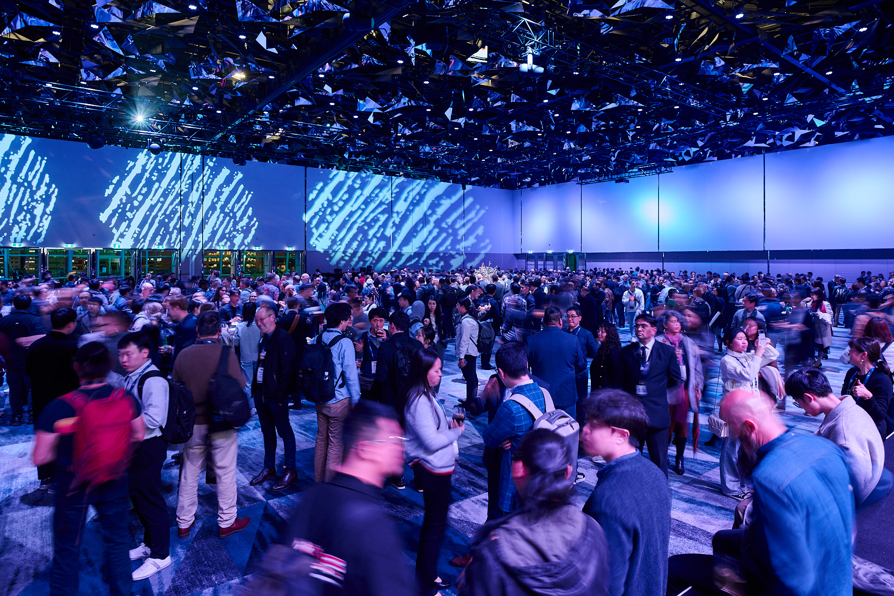
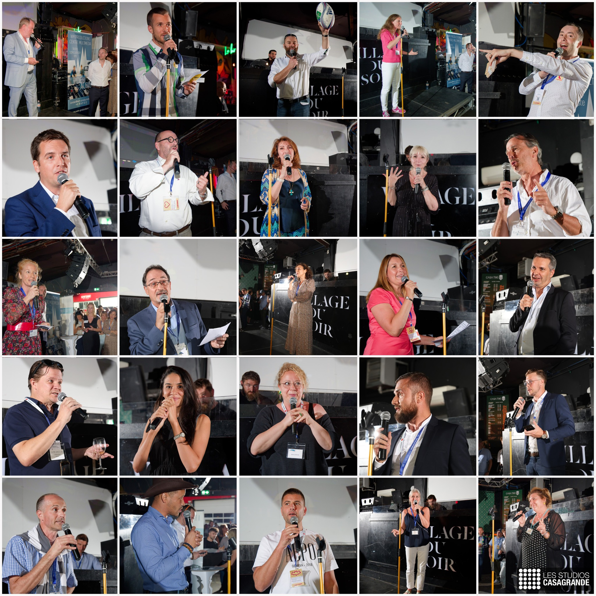
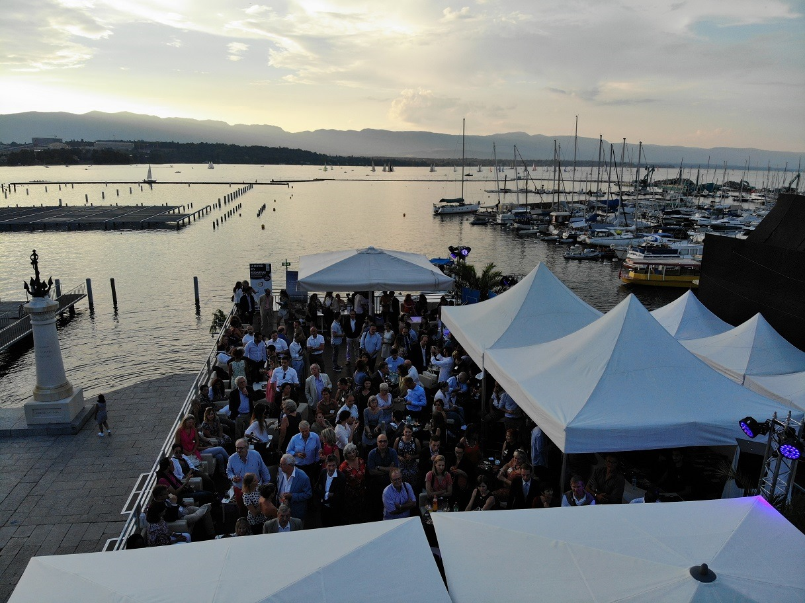

EDITION LAUSANNE
Le 27 août 2026
Présent en Suisse et en France pour promouvoir le réseautage et l’économie locale

Faire de nouveaux contacts, créer des synergies mais ce qui nous tient particulièrement à cœur… c’est de remettre l’humain au centre de vos échanges !

Une réunion annuelle incontournable pour tous les réseauteurs à ne surtout pas manquer !

Chaque réseau est présenté sur scène en quelques minutes ou tient un stand et mets en avant ses spécificités.

Remettons l’humain au cœur de nos échanges !
Célèbre le réseautage, crée une émulation seine entre les réseaux et encourager les entreprises à se développer d’une manière plus humaine.
Le 27 août 2026
A venir
03 septembre 2026
A venir
Le 10 septembre 2026
Le 24 septembre 2026
La plus grande soirée de réseautage inter-clubs en Suisse et en expansion internationale
La Rentrée des Réseauteurs est une grande soirée annuelle de réseautage professionnel réunissant clubs d’affaires, réseaux business, entrepreneurs, dirigeants PME et indépendants.
Né à Genève, le concept rassemble aujourd’hui plusieurs villes : Genève, Lausanne, Neuchâtel, Lyon, Annecy et prochainement Metz.
Son objectif est simple : connecter les réseaux entre eux. C’est le “réseau des réseaux”.
À Genève, La Rentrée des Réseauteurs est l’un des événements inter-clubs les plus importants. Avec 9 éditions organisées, elle constitue une référence locale du réseautage professionnel.
L’événement permet de rencontrer en une seule soirée plusieurs clubs d’affaires actifs à Genève, favorisant des connexions transversales et stratégiques.
Pour réussir son réseautage à Genève :
Un événement inter-clubs comme La Rentrée des Réseauteurs permet d’accélérer ce processus en réunissant plusieurs réseaux en un seul lieu.
Trouver le bon club d’affaires à Genève dépend de :
La Rentrée des Réseauteurs facilite cette recherche en permettant de rencontrer différents clubs lors d’une grande soirée de réseautage à Genève.
Oui. Lausanne dispose d’un écosystème entrepreneurial dynamique avec plusieurs réseaux professionnels actifs.
Participer à un événement networking à Lausanne comme La Rentrée des Réseauteurs permet de découvrir les clubs d’affaires lausannois et d’élargir son réseau local.
Neuchâtel connaît un développement entrepreneurial croissant. La Rentrée des Réseauteurs à Neuchâtel constitue une opportunité stratégique pour identifier les clubs business locaux et rencontrer des entrepreneurs actifs de la région.
Lyon est l’une des métropoles économiques majeures en France. Les clubs business lyonnais jouent un rôle important dans la dynamique entrepreneuriale locale.
La Rentrée des Réseauteurs à Lyon permet de connecter plusieurs réseaux professionnels en une seule soirée, favorisant des opportunités élargies.
Oui. Annecy dispose d’un tissu entrepreneurial dynamique et de réseaux professionnels en croissance.
La Rentrée des Réseauteurs à Annecy permet de structurer les rencontres entre clubs d’affaires et entrepreneurs locaux.
Oui. Le réseautage professionnel permet :
Dans des villes comme Genève, Lausanne ou Lyon, la relation précède souvent la transaction.
Un événement inter-clubs offre :
C’est une approche stratégique du réseautage professionnel.
Oui. La Rentrée des Réseauteurs s’adresse aussi aux entrepreneurs et professionnels qui souhaitent découvrir les clubs d’affaires de leur ville avant de s’engager.
Le nombre varie selon la ville, Genève étant historiquement la plus importante en volume grâce à ses 9 éditions.
Oui. L’ambition est de développer progressivement le concept dans d’autres villes en Suisse et en Europe, avec l’objectif de devenir une référence internationale du réseautage inter-clubs.
Les inscriptions se font directement via le site officiel selon la ville et la date annoncée.